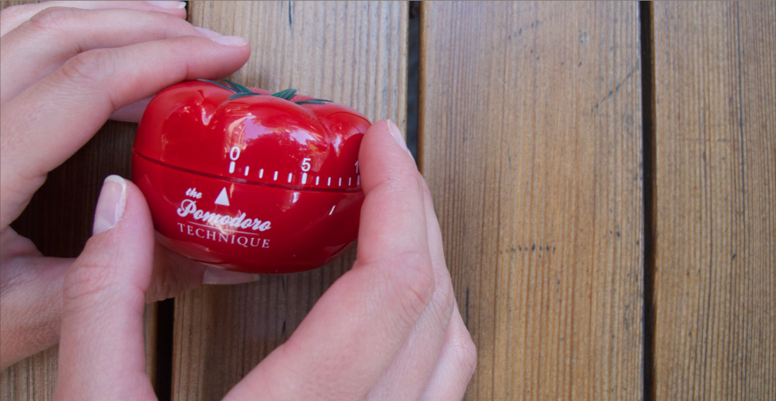

Giới thiệu kỹ thuật Pomodoro
Ngày 8 tháng 10 năm 2015
Hôm qua, mình được anh Kaiwei Chen, CEO của 2359 Media tại Việt Nam giới thiệu một kỹ thuật quản lý thời gian có vẻ thú vị tên là Pomodoro.
Kỹ thuật Pomodoro là gì?
Kỹ thuật Pomodoro (gọi tắt là Pomodoro) là một phương pháp quản lý thời gian được phát triển vào khoảng thập niên 1980 bởi một ông người Italia tên là Francesco Cirillo. Tên gọi "Pomodoro" xuất phát từ việc ông xài cái đồng hồ đêm ngược hình trái cả chua khi còn đi học Đại học. Vì trong tiếng Italia, "podomoro" có nghĩa là trái cà chua.
Tại sao sử dụng Pomodoro?
Lợi ích mà Pomodoro đem lại.
Phương pháp thực hiện
Tư tưởng của Pomodoro là một "pomodoro" thường kéo dài khoảng 25 phút. Khi hết 25 phút thì bạn sẽ có một khoảng thời gian nghỉ ngắn là 5 phút. Kết thúc một khoảng thời gian ngắn đó thì bạn sẽ tiếp tục một pomodoro mới. Sau khoảng 4 pomodoro thì bạn sẽ có một khoảng thời gian nghỉ dài là khoảng 15 đến 30 phút.
Tóm tắt 5 bước để thực hiện kỹ thuật Pomodoro.

Một số nguyên tắc
Phần mềm Pomodoro
Có rất nhiều phần mềm để thực hiện việc theo dõi Pomodoro. Bạn có thể tải các phần mềm bằng cách tìm kiếm với từ khóa "pomodoro app".
Hoặc tải phần mềm TeamViz. TeamViz tương thích với hầu hết các nền tảng phổ biến như Windows, Mac, Android, iOS, Ubuntu và có khả năng đồng bộ dữ liệu giữa các thiết bị với nhau. Hãy tải theo link sau: http://www.teamviz.com/downloads/.
Hướng dẫn chi tiết sử dụng TeamViz, các bạn có thể tham khảo ở đây http://anhthienad.com/blog/quan-ly-thoi-gian-tuyet-doi-voi-teamviz-pomodoro-timer.html.
Chuyện bên lề
Kỹ thuật Pomodoro đã được nhiều nơi viết bài review. Mình viết bài này chỉ với ý nghĩ là bổ sung thêm những phần mình cảm thấy chưa hài lòng. Theo quan điểm của mình, kỹ thuật Pomodoro giúp chúng ta làm quen dần với khái niệm "Estimate", tức là ước lượng.
Chẳng hạn, có người hỏi bạn làm Instant Search mất khoảng bao lâu? Người ta hỏi bạn như vậy để biết sắp xếp thời gian cho các công việc khác trong dự án. Nếu bạn ước lượng dư thời gian thì tốt. Còn giả sử, bạn nói người ta chức năng đó làm 10 giờ mà thực tế thì mất 30 giờ. Như vậy, bạn sẽ kéo theo một loạt các tiến trình bị chậm lại.
Rõ ràng hơn nhé, bạn nhận tiền khách hàng là 5 triệu cho một dự án làm trong vòng 1 tuần. Nhưng thực tế thì bạn làm mất 2 tuần. Và theo luật "lâm nghiệp", khách hàng họ chỉ trả đúng 5 triệu. Thời gian 1 tuần trễ thì bạn không được một xu nào, và bị lỗ do chi phí phát sinh, bạn phải tự lấy tiền túi ra trả. Mình lấy ví dụ trên để minh họa cho việc ước lượng thời gian quan trọng như thế nào. Bạn chưa có kinh nghiệm, có thể ước lượng công việc đó mất khoảng bao nhiêu pomodoro và chiến. Ban đầu có thể sai, nhưng dần dần sẽ có kinh nghiệm. Giống như mình ban đầu, ước chừng mất khoảng 1 pomodoro để hoàn thành bài viết này, nhưng thực tế là mất đến 3 pomodoro. Dù sao thì chúng ta cũng nên thử sai và cải thiện.